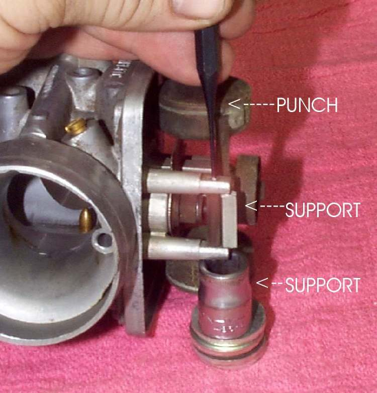
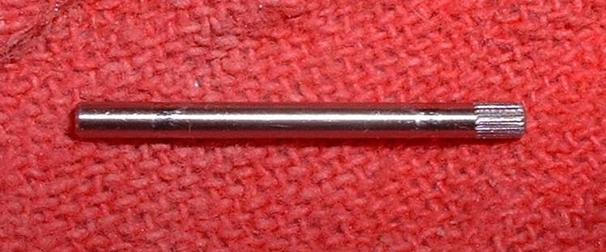

The float swings on a thin pin held by two posts cast into the carburettor body. After long storage the pin can seize with varnish or rust. The posts are weak and snap if the pin is forced, and a new carburettor body costs a lot. Time and penetrating oil are the safe way.
Safety
- Turn the fuel off and drain the bowl first. Fuel is flammable.
- Wear safety glasses. A punch can slip.
You need
- The carburettor off the bike and the float bowl removed.
- Penetrating oil, a very small punch and a light hammer.
- A support block or socket to back up the posts.
Steps
- Spray penetrating oil on both ends of the pin. Leave it for several hours, or overnight. The gum took months to form, so it needs time to loosen.
- Look at the pin ends. Some pins are serrated at one end, and the serrations bite into the post to lock it. Work from the serrated end, and push the pin out from that end. Check your manual if unsure.
- Put a support behind the post on the side being struck, so the post cannot bend.
- Set the punch on the pin and tap very gently. Add a little more oil if it does not move.
- Once the pin moves, push it out by hand. Catch the float and the needle as it comes free.
- Check the pin for a worn groove and the posts for cracks. Replace a worn pin.
Check your work
- The float swings freely on its pin and the posts are straight and unbroken.
- With the float refitted, the height is correct. See Set the float height.
If it did not fix the problem
- Pin will not move after a second soak: ask a workshop. A broken post cannot be repaired by a rider.
- Fuel still overflows: Check the carburettor float and needle valve.